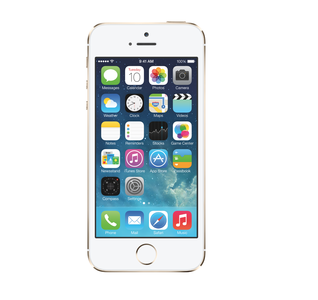
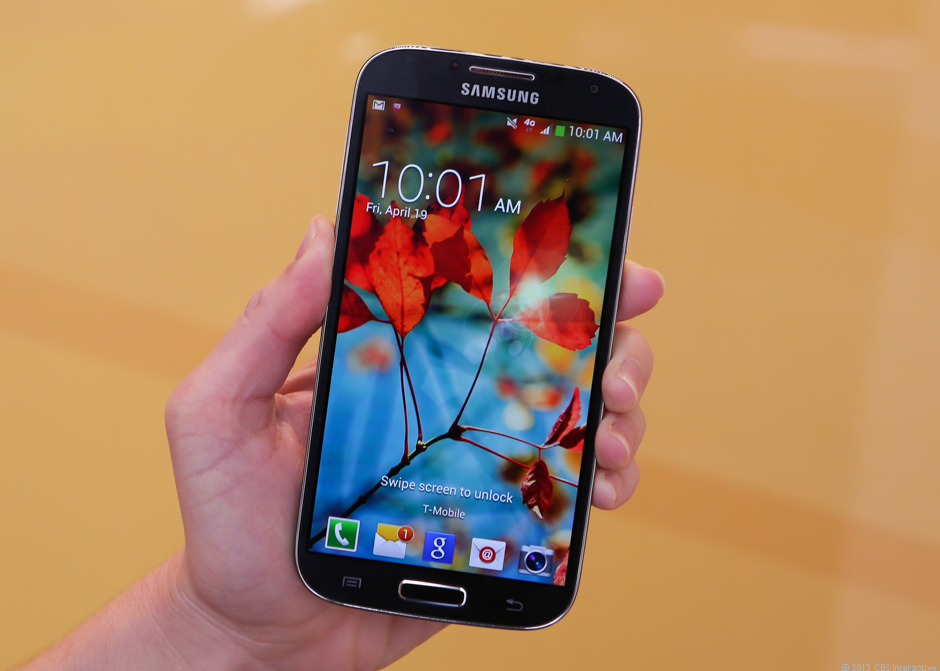
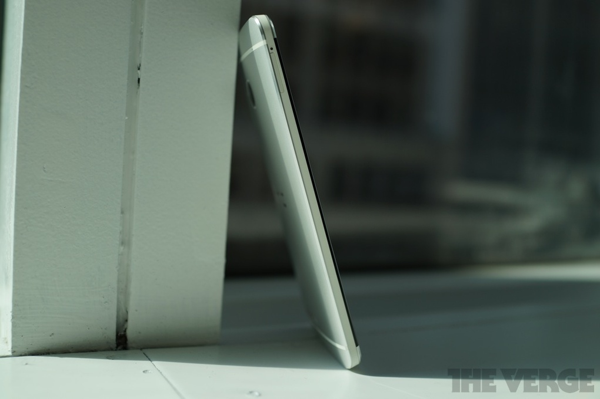
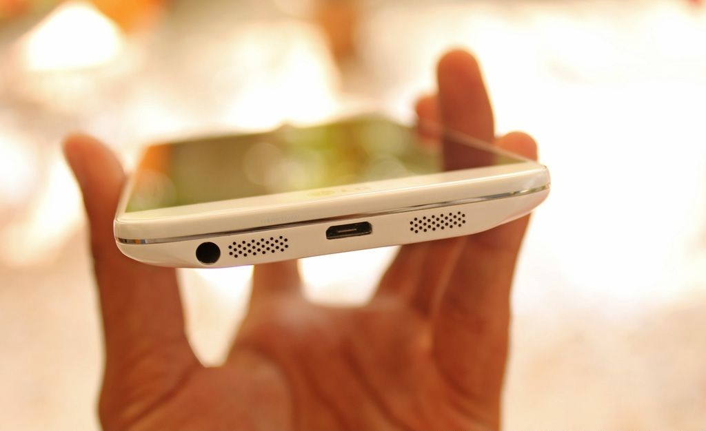
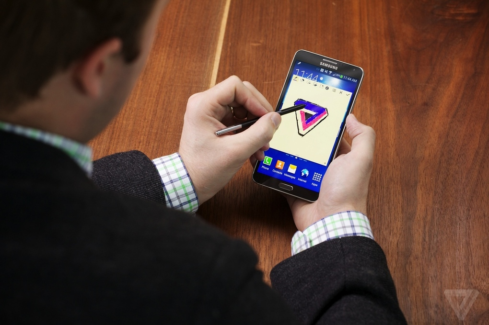

IPhone 5S review
| Home | History Of smartphones | Reviews | Best cameraphones | Best android smartphones of 2013 |
Best Android Smartphones
Galaxy S4

PROS CONS
- Excellent camera TouchWiz feels dated
- Vibrant display Plastic aesthetics
- Health is neat
Certain features just don't work
AT A GLANCE
The Samsung Galaxy S4 is a stellar Android phone held back by boring design and half-baked features.Read the full review.
H t c O n e

PROS CONS
-
Phone feels great in hand. BlinkFeed can't be disabled.
-
Ultra-high resolution display looks amazing. Volume and power buttons can be hard to locate.
-
Camera excels at taking low-light
AT A GLANCE
With its stellar design, great camera, and hardy processor, the HTC One is the phone to beat.Read the full
review.
L G G 2

PROS CONS
-
Long battery life Rear-facing buttons are odd, far removed from the norm
-
Manual focus for photo-taking LG's Android interface is too crowded
AT A GLANCE
Has every element for a perfect smartphone but its just done without a heart.Its lacks the satisfaction and user experience.Read the full
review
N o t e 3

PROS CONS
-
Long battery life Bundled with Samsung's own apps and extra features that you may never use
-
S-Pen is plenty useful if you like wielding a stylus Same plasticky chassis as its predecessors
AT A GLANCE
The Note 3 is one of Samsung's best phones to date, but it still doesn't fit into your pocket.To know more read the full review

PROS CONS
AT A GLANCE
The Samsung Galaxy S4 is a stellar Android phone held back by boring design and half-baked features.Read the full review.
H t c O n e

PROS CONS
- Phone feels great in hand. BlinkFeed can't be disabled.
- Ultra-high resolution display looks amazing. Volume and power buttons can be hard to locate.
- Camera excels at taking low-light
- Long battery life Rear-facing buttons are odd, far removed from the norm
- Manual focus for photo-taking LG's Android interface is too crowded
- Long battery life Bundled with Samsung's own apps and extra features that you may never use
- S-Pen is plenty useful if you like wielding a stylus Same plasticky chassis as its predecessors
AT A GLANCE
With its stellar design, great camera, and hardy processor, the HTC One is the phone to beat.Read the full review.
L G G 2

PROS CONS
AT A GLANCE
Has every element for a perfect smartphone but its just done without a heart.Its lacks the satisfaction and user experience.Read the full review
N o t e 3

PROS CONS
AT A GLANCE
The Note 3 is one of Samsung's best phones to date, but it still doesn't fit into your pocket.To know more read the full review